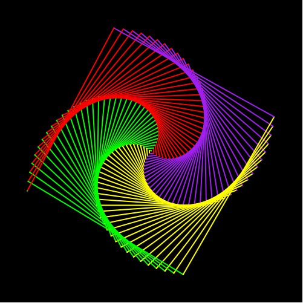
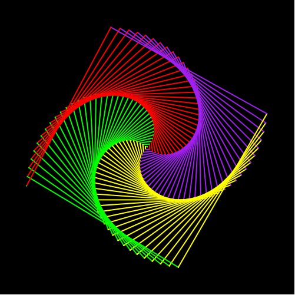

6.2.1
4 Racket Turtle
| (require teachpacks/racket-turtle) | package: teachpacks |
WeScheme:ssä kirjasto on eri: (require wescheme/Engb0r37Kg)
Tässä osassa esitellään Racket Turtle - kirjasto, jonka avulla voi piirtää turtle-grafiikkaa ja tehdä monipuolisia taideteoksia. Racket Turtle on helppo ohjelmoida tekemään kuvioita, ja se soveltuu aivan aloittelijoillekin. Sen avulla voidaan kuitenkin opetella myös vaikeampia ohjelmointikäsitteitä kuten listoja ja rekursiota.
Racket Turtlella piirrettyjä kuvia:
 
